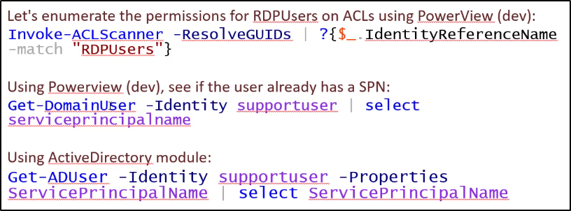

Set SPN (Service Principal Name).
https://en.wikipedia.org/wiki/Kerberos_(protocol)
Con ababstanza permessi (GenericAll/GenericWrite),
un SPN di un utente può essere settato pari a quello che si vuole!
(in modo unico nel dominio)
In questo modo possiamo richiedere un TGS, senza privilegi speciali.
Poi il TGS potrà essere Kerberoasted.
Il punto sta che:
se un SPN di un utente non è nullo, per il DC Account
quell'account è usato come Service Account e puoi richiedere i TGS.
Non importa se vi sia un servizio vero e proprio che giri.
Ora possiamo cercare utenti con pieni permessi (GenericAll o GenericWrite) sul dominio
e richiediamo un TGS a nome loro, per Kerberoastarli offline:
(Ricorda di cambiare "supportuser" ovviamente!)

Con questi comandi, possiamo settare un SPN per un utente e successivamente richiedere un TGS! 

Infine, richiediamo il ticket:
NB: cambia l' -ArgumentList con l'SPN che hai definito per un utente!


Possiamo vedere successivamente il ticket con "klist":

Infine, possiamo esportare i tickets con Mimikatz:
ora abbiamo un ticket TGS con l'hash della persona da crackare!

Infine, possiamo crackare offline il TGS:
Meglio usare hashcat se possibile!